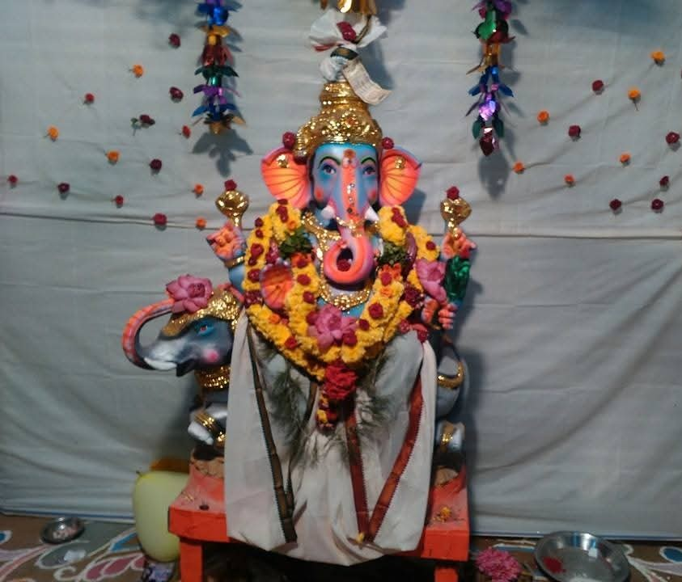

விநாயகர் சதுர்த்தி விழா - 2015
2015 இல் நடைபெற்ற விழா மிகவும் சிறப்பாக நடைபெற்றது. பொதுமக்கள், குழந்தைகள் மற்றும் சமூக ஆர்வலர்கள் பலரும் கலந்து கொண்டனர்.
2015 இல் நடைபெற்ற விழா மிகவும் சிறப்பாக நடைபெற்றது. பொதுமக்கள், குழந்தைகள் மற்றும் சமூக ஆர்வலர்கள் பலரும் கலந்து கொண்டனர்.